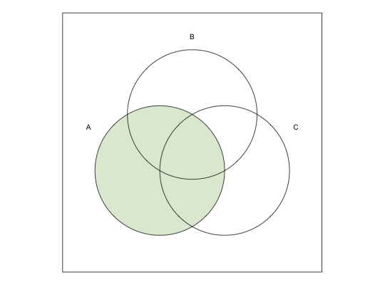
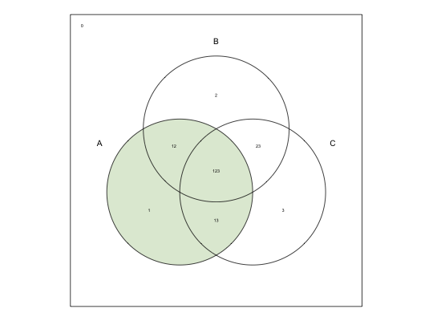
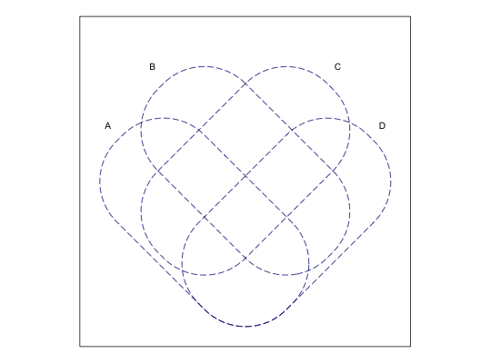
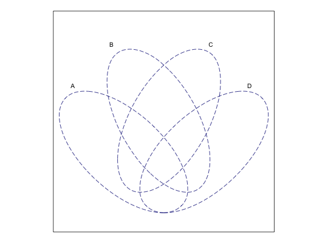
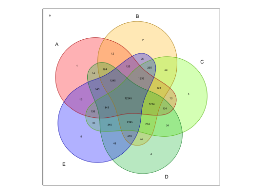
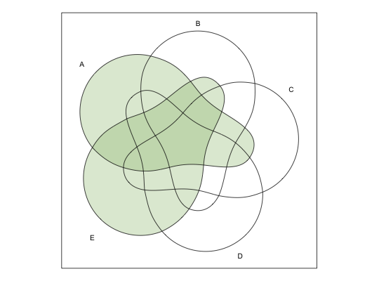
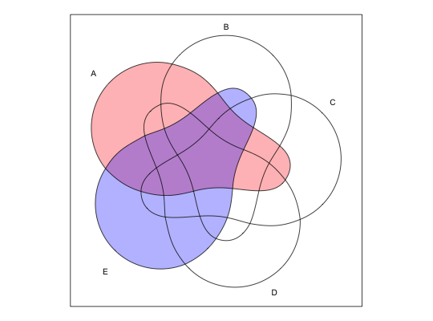
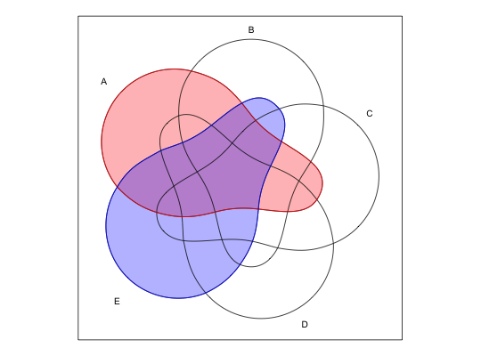
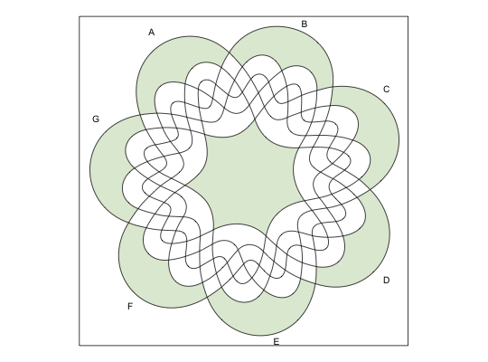
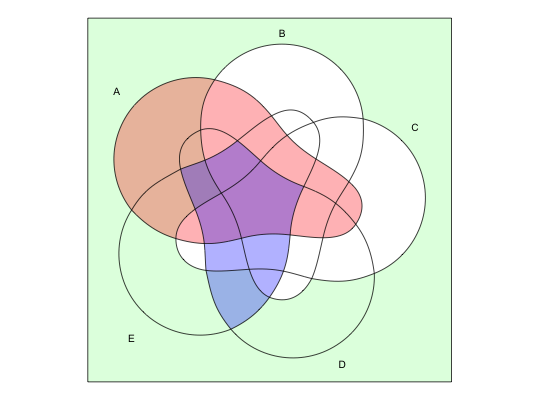

Draw and display a Venn diagram
Usage
venn(x, snames = c(""), ilabels = FALSE, counts = FALSE, zcolor = c("bw"), transparency = 0.3, ellipse = FALSE, size = 15, cexil = 0.45, cexsn = 0.85, ...)
Arguments
- x
- A single number (of sets), or a metacommand formula (see details), or a list containing set values, or a dataset containing boolean values.
- snames
- An optional parameter containing the names for each set.
- ilabels
- Logical, print the labels for each intersection.
- counts
- Logical, print the counts for each intersection.
- zcolor
- A vector of colors for the custom zones, or predefined colors if "style"
- transparency
- Transparency for the color(s) specified with
zcolor - ellipse
- Logical, force the shape to an ellipse, where possible
- size
- Plot size, in centimeters.
- cexil
- Character expansion for the intersection labels
- cexsn
- Character expansion for the set names
- ...
- Additional parameters, mainly for the outer borders of the sets
Description
This function uses a variety of input data to draw and display a Venn diagram with up to 7 sets.
Details
The argument x can be either:
- a single number of sets, between 1 and 7
- a metacommand (character) to draw custom intersection zones
- a list, containing values for the different sets: each component is a set,
and only up to 7 components are processed.
- a dataset of boolean values.
A "zone" is a union of set intersections. There are exactly 2^k intersections
in a Venn diagram, where k is the number of sets. To highlight an entire set,
we need a union of all possible intersections which form that set.
For example, in a 3 sets diagram, the (overall) first set is composed by four
intersections:
100 for what is in the first set but outside sets 2 and outside set 3
101 for the intersection between sets 1 and 3, outside set 2
110 for the intersection between sets 1 and 2, outside set 3
111 for the intersection between all three sets.
A meta-language can be used to define these intersections, using the values of
1 for what is inside the set, 0 for what is outside the set, and
- when its either inside or outside of the set.
The command "1--" is translated as "display only the first, entire set" is
equivalent with the union of the four intersections "100 + 101 + 110 + 111".
The parameter setnames should have the same length as the number of sets
specified by the parameter x.
When the parameter x is used as a metacommand, the number of sets is calculated
as the number of characters in each intersection of the metacommand. One such
character command is "100 + 101 + 110 + 111" or "1--", and all
intersections have exactly three characters.
It is also possible to use a regular, disjunctive normal form, like "A",
which is equivalent with "Abc + AbC + ABc + ABC". When x
is an expression written in DNF, if a valid R statement then quoting is not even necessary.
Argument counts is used when x is a list or a dataframe. When a list,
it counts the number of common values for each intersection. When x is a
dataframe (comprised of exclusively boolean values 0 and 1), it counts the number of
similar rows, for each intersection. counts is activated by default when
x is a list or a dataframe.
The argument snames establishes names for the different sets, or in its absence
it is taken from LETTERS. When x is a list or a dataframe,
snames is taken from their names. The length of the snames
indicates the total number of sets.
The argument ellipse differentiates between two types of diagrams for 4 and 5 sets.
The idea is to allow for as much space as possible for each intersection (also as equal
as possible) and that is impossible if preserving the shape of an ellipse. The default is
to create large space for the intersections, but users who prefer an ellipse might want
to set this argument to TRUE.
Colors to fill the desired zones (or entire sets) can be supplied via the argument
zcolor (the default is "bw" black and white, which means no colors at all).
Users can either chose the predefined color style, using zcolor = "style", or supply
a vector of custom colors for each zone. If only one custom color is supplied, it will
be recycled for all zones.
When using zcolor = "style", any other additional arguments for the borders are
ignored.
A different set of predefined colors is used, when argument x is a QCA type object
(a truth table, either from a class tt or from a class qca). If custom colors
are provided via zcolor, it should have a length of 3 colors: the first for the
absence of the outcome (0), the second for the presence of the outcome (1),
and the third for the contradictions (C). Remainders have no color, by default.
Via ..., users can specify additional parameters, mainly for the outer borders
of the sets, as specified by par. All of them are feeded to the function
lines() which is responsible with the borders.
For up to 3 sets, the shapes can be circular. For more than 3 sets, the shape cannot be circular, in the case of 4 and 5 sets they are ellipses. For more than 5 sets the shapes cannot be continous (they might be monotone, but not continous). The 7 sets diagram is called "Adelaide" (Ruskey, 2005).
The most challenging diagram is the one with 6 sets, where for many years it was thought a Venn diagram didn't even exist. All diagrams are symetric, except for the one with 6 sets, where some of the sets have different shapes. The diagram in this package is an adaptation from Mamakani, K., Myrvold W. and F. Ruskey (2011),
References
Ruskey, F. and M. Weston. 2005. Venn diagrams. Electronic Journal of Combinatorics, Dynamic Survey DS vol.5.
Mamakani, K., Myrvold W. and F. Ruskey. 2011. Generating all Simple Convexly-drawable Polar Symmetric 6-Venn Diagrams. International Workshop on Combinatorial Algorithms, Victoria. LNCS, 7056, 275-286.
Examples
# A simple Venn diagram with 3 sets venn(3)
# display the first whole set venn("1--")
# an equivalent command venn("100 + 110 + 101 + 111")# another equivalent command venn(c("100", "110", "101", "111")) # adding the labels for the intersections venn("1--", ilabels = TRUE)
# using different parameters for the borders venn(4, lty = 5, col = "navyblue")
# using ellipses venn(4, lty = 5, col = "navyblue", ellipse = TRUE)
# a 5 sets Venn diagram venn(5)# a 5 sets Venn diagram using ellipses venn(5, ellipse = TRUE)# a 5 sets Venn diagram with intersection labels venn(5, ilabels = TRUE)# and a predefined color style venn(5, ilabels = TRUE, zcolor = "style")
# a union of two sets venn("1---- + ----1")
# with different colors venn("1---- + ----1", zcolor = c("red", "blue"))
# same colors for the borders venn("1---- + ----1", zcolor = c("red", "blue"), col = c("red", "blue"))
# 6 sets diagram venn(6)# 7 sets "Adelaide" venn(7)# artistic version venn(c("1000000", "0100000", "0010000", "0001000", "0000100", "0000010", "0000001", "1111111"))
# when x is a list set.seed(12345) x <- list(First = 1:20, Second = 10:30, Third = sample(25:50, 15)) venn(x)# when x is a dataframe set.seed(12345) x <- as.data.frame(matrix(sample(0:1, 150, replace=TRUE), ncol=5)) venn(x)# using disjunctive normal form notation venn("A + Bc", snames = "A,B,C,D")# the union of two sets, example from above venn("A + E", snames = "A,B,C,D,E", zcol = c("red", "blue"))
# if the expression is a valid R statment, it works even without quotes venn(A + bc + DE, snames = "A,B,C,D,E", zcol = c("red", "palegreen", "blue"))
## Not run: # # produce Venn diagrams for QCA objects # # library(QCA) # # data(CVF) # obj <- truthTable(CVF, "PROTEST", incl.cut = 0.8) # # venn(obj) # # # # to set transparency based on inclusion scores # venn(obj, transparency = obj$tt$incl) # ## End(Not run)